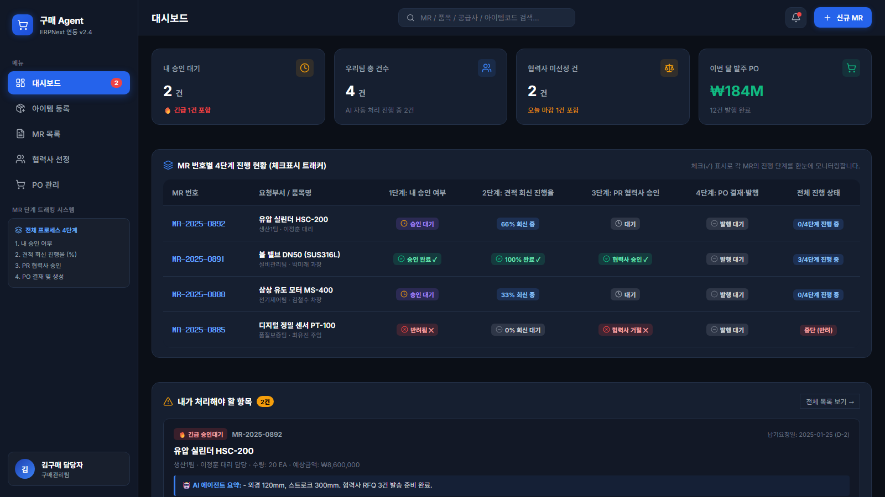

프로세스가 도구별로 끊겨 있습니다
MR 확인 → 공급사 검색 → RFQ 작성 → 이메일 → 견적 비교를 사람이 직접 이어 붙여야 합니다.
AI AGENT × ERPNext × HUMAN APPROVAL
요청 부서의 MR 접수부터 공급사 견적 비교와 PO 발행까지,
끊어진 구매 업무를 하나의 상태 흐름으로 연결하는 AI 구매·발주 플랫폼
ERP, 이메일, 엑셀, 담당자의 경험 사이에서 정보·상태·책임이 끊어집니다.
MR 확인 → 공급사 검색 → RFQ 작성 → 이메일 → 견적 비교를 사람이 직접 이어 붙여야 합니다.
미회신, 견적 누락, 유효기간, 이상 단가를 놓치지 않도록 담당자가 반복 확인해야 합니다.
이상 수량, 대체품, 구매·입찰, 공급사 선정이 개인 경험에 의존해 판단 편차가 발생합니다.
GLOBAL INDUSTRY BENCHMARK
bidding flow의 자동화 구간
공급사 탐색 · RFQ 작성/발송 · 회신 추적 · 견적 구조화/비교
해외 벤치마크 기준 · 자체 실측 아님
AuraVMS · Elisa Industriq (APQC 인용)
AI·Rule·ERPNext API가 다음 행동을 실행하고, 승인과 최종 선택은 사람이 통제합니다.
화면의 추천에 그치지 않고 ERPNext 문서·코멘트·이메일까지 연결
견적과 거래 확정 회신을 기다려 중단하고, 이벤트가 오면 이어서 진행
규격 부족, 미회신, RFQ 보완, 거래 거절을 다음 조치로 자동 연결
ITEM·MR·구매/입찰·최종 견적·PO 단계에 명확한 승인 지점
각 사용자는 필요한 정보와 결정만 전달받습니다.
외부 회신을 기다릴 때는 안전하게 멈추고, 이벤트가 도착하면 다시 이어갑니다.
규격 보완·대체품
승인·반려
이상치·수량·납기
대체품 검토
담당자 배정
긴급/납기 정렬
바로 구매
vs 입찰
다단계 공급사 탐색
작성·발송
견적 회신
대기·재확인
외부 견적 구조화
Top-K 선정
PR·거래 확정
PO 발송
핵심 설계: 단계별 결과와 승인 상태를 저장해, 중단 이후에도 동일한 문맥에서 재개
대체품·부족 규격 코멘트, DB 기반 재검증, 최대 5회 보완
요청부서 선택 후 구매팀이 등록 승인·반려
거래 이력 이상치 경고, 재고 기반 대체품 최대 5개 추천
구매 담당자가 MR 승인·반려 및 사유 입력
나라장터→거래이력→Web 탐색, RFQ 작성·이메일 발송
회사 정책에 따른 구매/입찰 경로 확정
외부 견적 추출, 누락·유효기간·이상 단가 검토, Top-K
최종 Quotation 선택 및 상부 결재
PO Draft·PR 발송, 미회신 재확인, 차순위 업체 재진행
거래 확정 회신 후 PO 발송 승인
AI가 대체품과 부족 규격을 ERPNext 코멘트로 안내합니다. 요청 내용은 DB에 저장해 재요청 시 다시 검증하며, 최대 5회 후 구매팀 승인으로 전환합니다.
AI + DB + ERP COMMENT기존 거래 이력의 이상 수량을 경고하고, 동일 Item Group·핵심어·재고를 통과한 대체품을 규격 유사도 순으로 최대 5개 제안합니다.
RULE + AI회사 카탈로그 기준으로 담당자를 배정·이관하고, 긴급 요청과 납기일로 정렬합니다. 회사별 정책을 반영해 구매와 입찰을 사람이 확정합니다.
POLICY + HUMAN GATE나라장터 기업 → 최근 30일 거래 → Tavily Web Search 순으로 후보를 찾고, Naver API로 연락처를 보강해 ERPNext Supplier에 저장합니다.
FUNNEL SEARCHRFQ 발송 후 흐름을 중단하고 회신을 기다립니다. 미회신 시 재확인하며, RFQ 내용 보완 요청이 오면 수정·발송 단계로 되돌아갑니다.
PAUSE · RESUME · RETRY이메일·파일 견적을 Hugging Face LLM으로 추출해 ERPNext에 등록하고, 누락·유효기간·이상 단가를 검토한 뒤 단가·납기로 Top-K를 제안합니다.
DOCUMENT AI + RANKINGChatbot · Dashboard · ITEM · MR · Vendor · PO
인증 · 구매 API · ERP Gateway
ITEM 보완 · 이상치 · 대체품 · RFQ · Top-K · Pause/Resume
Item · MR · Stock · RFQ · SQ · PO
↕ 동기 문서 처리보완 이력 · 승인 상태 · 재개 지점
↕ 상태 저장공급사·거래·연락처 탐색
↕ 검색 APIRFQ 발송 · 견적 · 거래 확정
↻ 회신 시 재개아래 진행률은 저장소 코드 자산 기준의 자체 추정이며 운영 배포 완성도를 의미하지 않습니다.

재고 부족 → MR → 구매 경로 → RFQ → 견적 비교 → PO → 입고/매입 초안의 최소 시나리오를 테스트 코드로 연결
실제 서버 연결, MR/RFQ 생성 및 공급사 발송 경로를 확인하는 E2E 스크립트 구성
현재 Gold는 pooled judgment 기반입니다. 독립 human reference가 없어 시장 전체 성능으로 일반화하지 않습니다.
Source · backend_logic2/evaluation/vendor_retrieval_report.json (macro average, pilot 4 items)
견적이 며칠 뒤 도착하거나 끝내 오지 않을 수 있음
상태 저장, 마감 기준 재개, 주기적 재확인
표준 필드 비교와 필수값 검증이 어려움
텍스트 변환, schema 검증, 낮은 신뢰도 수동 검토
고정 규칙만으로 정책 변화 대응이 어려움
별도 입력 폼, 버전 관리, 결정 근거 기록
파일럿 성과가 실제 시장 성능을 대표하지 않음
품목 확대, 독립 평가자, 실패 사례 회귀 테스트
실데이터·승인 상태와 화면 불일치 가능
상태 모델 통일, 오류/재시도 UX, 통합 테스트